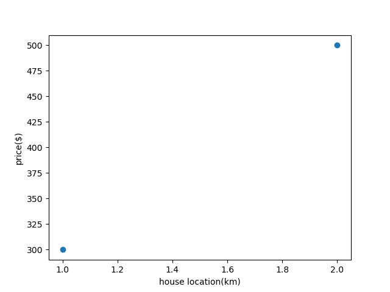
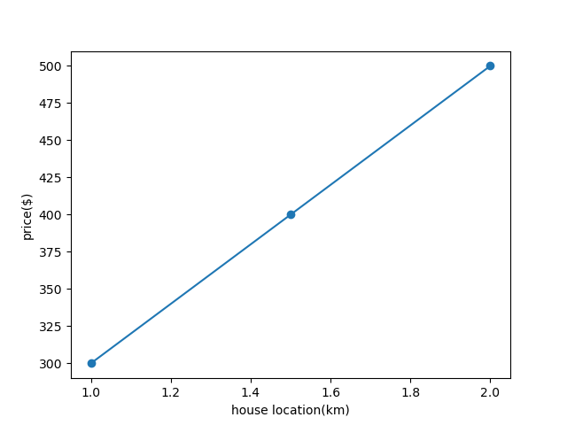
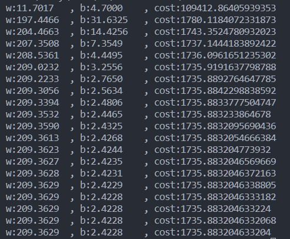
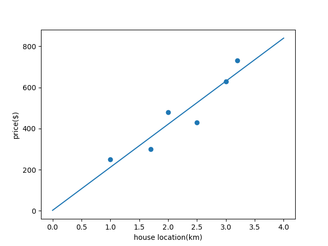

一、引言——房价预测问题
问题： 假设我们知道一些房价与距离的对应关系，通过这些已知的信息，能否预测在一定范围内任意距离对应的房价？
首先考虑最为简单的情况，也就是只有两个房价信息的情况。

如图所示，1km时对应房价为300，2km 时对应房价为500。很容易可以在这两点间连一条直线，这条直线就可以作为对房价的预测。这样用曲线对已知数据中的关系进行估计的方法称为拟合。
（注意，本文只考虑以一元线性函数进行拟合）
类似的，增加房价信息为三个点，如果三点共线，则该直线依然可以作为对房价的拟合。

但更可能的情况是三点不共线，对于更多的数据的情况则更是如此。这样的话要如何找到一条直线来拟合房价信息呢？
二、损失函数
我们需要找到一种标准来衡量直线对已有信息的拟合程度。
假设当前直线为：
$$ y = wx+b $$房子距离为 $x^{(1)},x^{(2)},x^{(3)}...,x^{(m)}$，对应的房价为 $y^{(1)},y^{(2)},y^{(3)}...,y^{(m)}$。 则对于每个距离 $x^{(i)}$，当前直线所预测的房价为:
$$ \hat{y}^{(i)} = wx^{(i)} + b $$该房价与真正的房价的差距为
$$ d = |y^{(i)} - \hat{y}^{(i)}| $$绝对值不可导，不妨用平方来代替
$$ d_2 = (y^{(i)} - \hat{y}^{(i)})^2 $$对于每个已知的房价信息，当前直线的预测都可能会有偏差，将这些偏差求和得到总的偏差
$$ \sum_{i=1}^{m}(y^{(i)} - \hat{y}^{(i)})^2 $$为了排除样本数量不同对偏差的影响，将偏差总和除以样本数量
$$ \frac{1}{m}\sum_{i=1}^{m}(y^{(i)} - \hat{y}^{(i)})^2 $$这也就是总体方差的计算式：
$$ \sigma^2 = \frac{1}{m}\sum_{i=1}^{m}(y^{(i)} - \hat{y}^{(i)})^2 $$对于机器学习，我们将$\hat{y}^{(i)}$展开，并将方差除以2，得到一元线性回归的损失函数（loss function），即
$$ J(w, b) = \frac{1}{2m}\sum_{i=1}^{m}(y^{(i)} - wx^{(i)} - b)^2 $$在 $x^{(i)}$，$y^{(i)}$ 确定的情况下，损失函数是关于 $w$ 和 $b$ 的连续可导的二元函数。该函数可以用来衡量 $w，b$ 所确定的直线与已知数据之间的偏差。
三、梯度下降
既然我们已经可以用 $J(w, b)$ 衡量直线对数据的拟合程度了，那么对于“如何找到最佳的拟合曲线”这一问题，就转化为了“如何找到使得 $J(w, b)$ 最小的 $w，b$ 值”。
我们可以确定一个任意的点 $(w_0, b_0)$ 作为初始位置，那么要到达 $J(w, b)$ 最小的位置， 要如何移动呢？我们要向能使 $J(w, b)$ 减小，并减小得最快的方向移动。具体的，也就是向着梯度的反方向移动。
$$ (w_1, b_1) = (w_0, b_0) - \alpha\nabla{J(w, b)} $$或
$$ \left\{ \begin{array}{lr} w_1 = w_0 - \alpha\frac{\partial{J(w, b)}}{\partial{w}} & \\ & \\ b_1 = b_0 - \alpha\frac{\partial{J(w, b)}}{\partial{b}} \end{array} \right. $$其中 $\alpha$ 称为步长，表示一次迭代时的移动程度。
通过多次重复迭代这一过程，最终得到的 $(w_n, b_n)$ 将位于梯度为 0 的位置。即损失函数的一个极小值点。这时对应的直线将能较好地拟合原本的数据。
当然，极小值点不意味着对应的值便是损失函数的最小值。在一些情况下，这一算法也可能会使拟合的直线处于局部最优而非全局最优的情况。但本文暂不处理这种情况。
四、代码实现
我们先导入 numpy 和 matplotlib
import numpy as np
import matplotlib.pyplot as plt
之后定义一些需要用到的函数。
计算损失函数
def get_cost(w, b, x, y):
m = x.shape[0]
sum_cost = 0
for i in range(m):
actual_y = w * x[i] + b
sum_cost += (actual_y - y[i]) ** 2
total_cost = (1 / (2 * m)) * sum_cost
return total_cost
计算损失函数对应的梯度
def get_gradient(w, b, x, y):
m = x.shape[0]
sum_w = 0
sum_b = 0
for i in range(m):
sum_w += x[i] * (w * x[i] + b - y[i])
sum_b += (w * x[i] + b - y[i])
gradient_w = (1 / m) * sum_w
gradient_b = (1 / m) * sum_b
return gradient_w, gradient_b
进行一次梯度下降迭代
def gradient_descent(w, b, x, y, alpha):
d_w, d_b = get_gradient(w, b, x, y)
w -= alpha * d_w
b -= alpha * d_b
return w, b
接下来是主体部分
设置已知数据
x_train = np.array([1.0, 1.7, 2.0, 2.5, 3.0, 3.2])
y_train = np.array([250, 300, 480, 430, 630, 730,])
初始化 $w$, $b$ 及步长 $\alpha$
w = 0
b = 0
alpha = 1e-2
使用梯度下降迭代 20000 次。每 1000 次打印当前的信息。
for i in range(20000):
w, b = gradient_descent(w, b, x_train, y_train, alpha)
if i % 1000 == 0:
print(f"w:{w}, b:{b}, cost:{get_cost(w, b, x_train, y_train)}")

最后输出拟合结果
plt.xlabel("house location(km)")
plt.ylabel("price($)")
plt.scatter(x_train, y_train)
plt.plot([0, 4], [b, w*4+b])
plt.show()
拟合效果如图：
